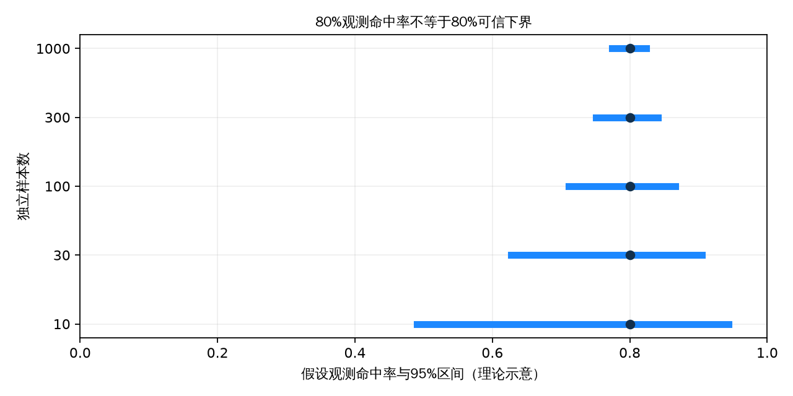
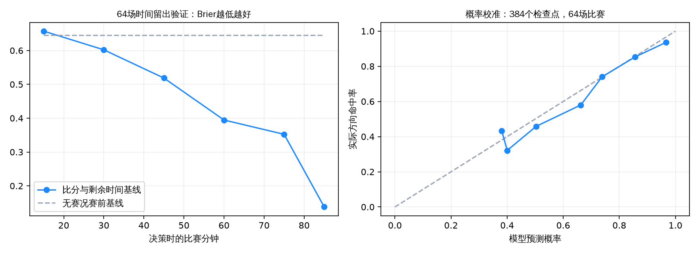
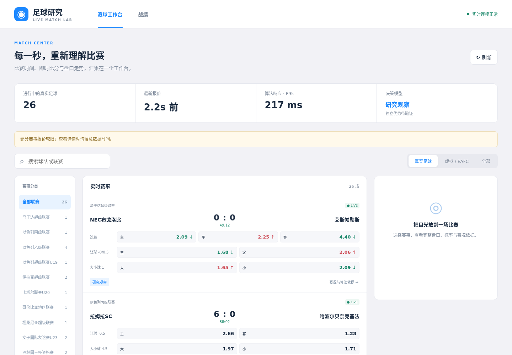
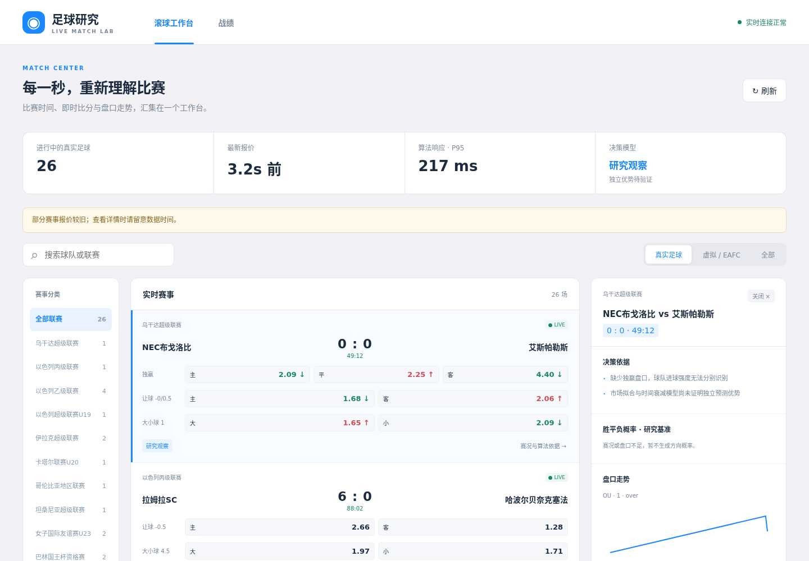
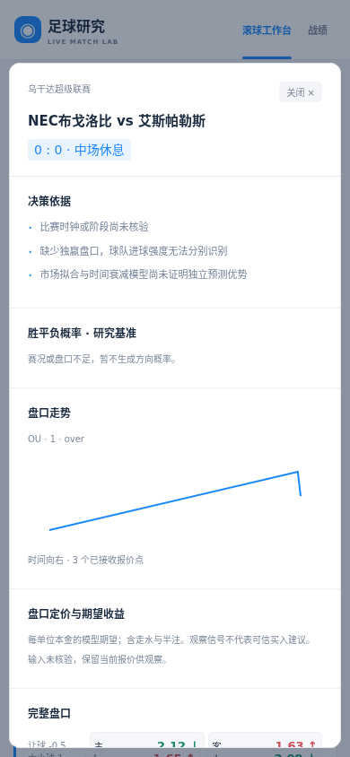
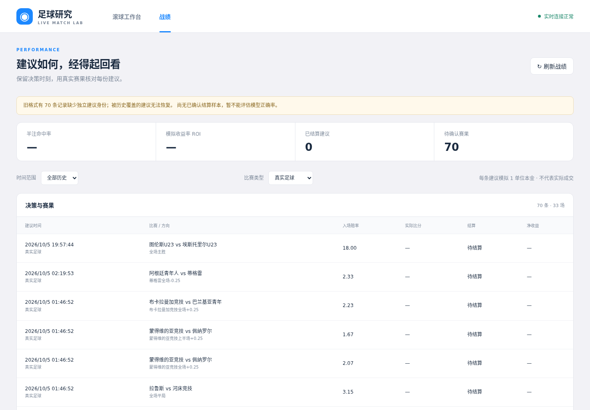

实时滚球决策：研究、设计与验证边界
2026-10-08；用户目标：秒级计算、可信战绩、App 风格精简 UI、专家级实时分析。本报告在创新实施前提交。证据 A=一手文档/代码/实测，B=学术研究，C=社区实测。本轮未以营销“高正确率”或社区荐单作为能力证据。
结论与研究路线
专家常用比赛时间、比分、场上事件、报价速度和盘口变化解释比赛。这些信息应转为可回放的事件时间特征和校准概率。推荐是否可信，需要在当时可用的信息上，与去水市场基准比较。高命中低赔率不等于正收益；少量精彩案例不足以证明长期优势。
创新选择：事件驱动快计算、比分条件下剩余进球模型、亚洲盘完整支付函数、证据门控、按比赛留出的校准回放。LLM 可解释已有结果，不能凭赔率编造球队状态、比赛事件或统计置信度。
sequenceDiagram participant Source as 乐鱼推送 participant State as 内存赛事状态 participant Model as 本地模型 participant UI as 工作台 participant Replay as 回放与战绩 Source->>State: 报价/比分/阶段/暂停（接收时刻） State->>Model: 固定首个到期，合并新状态 Model->>UI: 概率/EV/数据缺口/观察结论 Model-->>Replay: 版本化输入与建议 Source-->>Replay: 经确认的终场结果 Replay->>Replay: 半注结算，校准、ROI、覆盖率
成熟方案比较（A；定性比较，无主观数字打分）
| 方案 | 事件接入 | 时间与场上事件 | 盘口 | 实时机制 | 覆盖依赖 | 接入成本 | 能否直接保证预测优势 |
|---|---|---|---|---|---|---|---|
| Hudl StatsBomb Live | GraphQL | 详细事件 schema，可订阅 | 需结合赔率源 | subscriptions | 购买比赛覆盖，客户 token | 商业授权，开放历史数据可研究 | 不能；数据还需建模验证 |
| Sportradar Soccer | REST/Push | timeline 与摘要，覆盖分层 | 独立赔率产品 | Live endpoints / Push | 低覆盖级别可能缺详细事件 | 商业账号与套餐 | 不能；覆盖和延迟需实测 |
| Stats Perform Opta | 商业数据接口 | 专业事件与分析 | 需结合行情 | 商业产品接入 | 依产品/赛事授权 | 商务洽谈 | 不能；官方产品页不是收益证据 |
| Betfair Stream | 交易所流 | 行情和订单，不等于球场事件 | 交易所价量 | 增量变更 + 线程安全缓存 | 市场覆盖与流权限 | 账户/AppKey | 不能；市场是比较基准 |
| 当前乐鱼 | REST/WS | 比分、阶段、未知事件码 | AH/OU/HAD | WS 秒级实测 | App 会话、部分比赛类型不明确 | 既有接入 | 不能；需修复信息缺口与验证 |
研究不会伪装已接入付费体育数据。当前继续以乐鱼为生产源；公开 StatsBomb 数据仅用于可署名的离线研究。
学术证据如何转成实现
| 证据 | 研究发现 | 实现与限制 |
|---|---|---|
| B Dixon & Coles 1997，DOI 10.1111/1467-9876.00065 | 动态球队强度 Poisson 模型，历史样本拟合与收益研究 | 提供基线思想，不可照搬 1990 年代回报为当前能力 |
| B Dixon & Robinson 1998，DOI 10.1111/1467-9884.00152 | 比赛内 birth-process 模型 | 剩余时间与比分需作为状态，不只预测赛前全场 |
| B 红黄牌研究，DOI 10.1007/s10479-022-04733-0 | 1826 场、5 分钟区间；红牌影响与时间、实力、比分有关 | 未核验事件码不设红牌乘数；不能用固定“红牌 +30%”冒充研究结果 |
| B Gneiting & Raftery 2007 | proper scoring，sharpness subject to calibration | 同时报告 Brier/log loss 和可靠性，不使用模型自评正确率 |
| A NIST Wilson 方法 | 二项比例置信区间 | 独立比赛级命中率可用，重复同场信号不能当独立样本 |
| B Gibbs/Candès ACI，arXiv:2106.00170 | 分布漂移下自适应覆盖 | 漂移监测研究方向；不是小样本高胜率保证 |
一手审计与测量
A：连续跳价每次把 pending 延后 30s；全局间隔 20s、目标批次150s；生产兜底一轮 62.06s。这些是 2026-10-08 抽样值，非稳定性保证。
A：OU over 2.25、1:1 被判全输，应输半；AH home -0.25、0:0 同样错误。台账取同盘口最新建议且更新报价改写建议时间，历史并非完整的决策轨迹。旧数据必须留备份并承认不可恢复部分。
A：APK 色彩白底 #ffffff、页底 #f2f2f6、蓝 #1c88ff、选中 #e8f3ff。仅采用视觉语言。
A：真实足球详情 mst 样本 2812/273/3689，是秒值。阶段 6/7 的时钟累计或重置必须核验；EAFC 时长不能沿用真实足球90分钟。未知事件、缺时钟和报价不一致应降低覆盖率，而非编造输入提高推荐量。

图为假设观测命中率 80% 时，独立样本量对 Wilson 95% 区间的影响（理论示意，非系统测量值）。CSV 含全部参数和区间。将成功率改为 50% 或 95% 重跑，样本越大区间越窄的方向不变。ROI、赔率与比赛相关性仍须单独评价。
验证方案
按比赛 ID 隔离训练与验证，时间顺序留出；只输入当时已收到的比赛状态，终场比分仅作标签。对市场拟合与滞后信号分别测试：市场拟合概率不能称为独立预测优势。完整亚洲支付函数含走水/半注。记录推荐覆盖率、每场一次或明确仓位的 ROI、Brier、log loss、可靠性分桶、缺失率、比赛数和区间。真实足球/EAFC 分开。
系统只记录模拟建议，没有交易执行或成交保证。未验证的模型明确显示“观察/尚未验证”，不以推荐数量或自评置信度替代证据。专家水平必须在独立比赛、足够样本、稳定校准和正收益下检验；短期命中率不能被承诺。
来源与检索诚实性
- A StatsBomb Open Data 与使用条款：公开研究需署名，非完整实时授权。
- A StatsBomb Live 指南：事件与订阅 schema，已读取。
- A Sportradar Live Match Updates：已读取。
- A Opta 产品页：已读取，不能推导量化延迟或收益。
- A Betfair 官方流客户端：README 缓存/批量变更已读取；developer.betfair.com 本轮403，未声称读到其正文。
- B Proper scoring 原文 PDF：已提取正文。
- A NIST 比例区间。
- B Adaptive Conformal Inference。
Crossref 已核验以上三个足球论文的题名/DOI/摘要；不把只有摘要的论文写成全文复现。两次检索 JSON 解码失败未作证据；arXiv:0803.0614 实际题名是 Fitness, chance, and myths，未误标为 birth-process 论文。未使用 SEO 荐单站做能力证据。
可复现命令
图表在限2核 Docker 中，挂载 /usr/share/fonts/truetype/wqy，运行 scripts/make_figures.py；默认生成2图/4CSV（其中3份来自公开回放）。HTML 复用现有报告渲染器 reports/leyu-kaiyun-odds-bot-feasibility/scripts/md_to_html.py，支持 Mermaid 与离线文本回退。实施后附回放结果、性能实测与 UI 截图，目标值和实测值分列。
已执行的真实历史回放（A，2026-10-08）
StatsBomb Open Data 固定提交 4b73468fc5b0f1950f9f66fada70ad3a4f9327cb，2018世界杯64场仅用于训练，2022世界杯64场仅用于验证；比赛事件仅提取常规上下半场进球，不用加时和点球大战当标签。感谢 StatsBomb 提供开放数据；使用条款见官方仓库 LICENSE.pdf。数据与 CSV 分别落在 data/public-matches.csv、public-goals.csv、public-replay.csv。
这是独立公开进球率基线的回放，与线上市场拟合基线不同。它验证比分/时间条件模型的数学和评估流程，没有验证乐鱼交易优势，也没有把世界杯的进球率直接套到线上所有联赛。
| 决策分钟 | 方向命中率（64场） | Brier | Log loss | 无赛况基线 Brier |
|---|---|---|---|---|
| 15 | 42.2% | 0.6573 | 1.0893 | 0.6447 |
| 30 | 53.1% | 0.6021 | 1.0049 | 0.6447 |
| 45 | 56.3% | 0.5186 | 0.8821 | 0.6447 |
| 60 | 71.9% | 0.3946 | 0.6989 | 0.6447 |
| 75 | 76.6% | 0.3524 | 0.6306 | 0.6447 |
| 85 | 92.2% | 0.1377 | 0.2672 | 0.6447 |

每场取第一次预测概率达到85%的检查点，最终64场全部覆盖，55场命中：85.94%，Wilson95%区间75.38%–92.42%。同一场其他检查点不重复进入此区间。早段表现甚至逊于无赛况基线，不能把85分钟92.2%包装成全场专家正确率。末段高命中主要受已知比分和短剩余时间影响，且补时未知可能导致过度自信。
没有同期赔率，ROI和相对市场优势均未知。故线上继续显示研究观察；若要升级可信推荐，需要新增同源盘口/赛况/终场的前瞻样本，按比赛和时间验证支付函数、概率、收益与覆盖率。目前已启用滚动输入日志供下一阶段评价。
复现：./scripts/cpu-limited.sh run -- python3 reports/live-expert-decision/scripts/public_replay.py --cache <公开数据缓存目录>（本轮 exit0）；图表2张、CSV4份（Wilson + 比赛 + 进球 + 回放），另有1份 JSON 汇总。
生产验收与真实延迟（A，2026-10-08）
端口3003工作台、8001 API已发布。最终镜像为 sha256:49f0026cda2a8835050cc4f34d2da99815048884ed1f304a1323c261934c972e。保留原 App 会话与共享登录保护；本轮没有重新提交账号口令。三容器均 healthy，实际 cpu.max 均为 200000 100000（每容器2核）。
正式采样窗口：UTC 16:50:53–16:52:52，120次 HTTP 请求；期间计算累计2411→4013，页面真实足球26→25场，连接保持1，重连/计算错误/日志丢弃/过期版本发布均为0。延迟分位数采用最多2048条的滚动窗口；真实足球最后一窗有2048条，不把分位数当全生命周期统计。
| 指标 | 验收目标 | 实测 | 测量口径 |
|---|---|---|---|
| 真实足球接收到结果 P95 | ≤1000ms | 205.243ms；采样期间最高报告值221.576ms | 本机最早合并事件到结果发布，不包含球场到上游及网络传输 |
| 算法计算 P95 | ≤100ms | 1.893ms；采样期间最高报告值1.983ms | 本地模型计算，未调用 REST/LLM |
| 真实足球 P99 / 最大值 | 观察尾延迟 | 430.032 / 675.043ms | 最后2048条滚动窗口 |
| 工作台 HTTP P95 | 观察响应 | 未压缩13.060ms；gzip12.174ms | 各60次同机请求，含传输，不是远程客户端测速 |
| 工作台响应体 | 降低传输量 | 未压缩平均63805字节；gzip平均9853字节 | 两组不同时间请求的均值，非同一快照的精确压缩率 |
原版本在发布后短时出现真实足球 P95≈1467ms。进一步检查发现当前报价表累积207552行，每秒健康查询扫全表，存盘格式化长时间持锁。现将工作台改为轻量状态查询，只在当前报价缓存保留15分钟内行情，历史归档独立保留；报价格式化在锁外执行。最终采样在所有容器完成更新后进行；此前一次测量被 nginx 重建时的短暂拒绝连接中断，未当作成功窗口。
全部聚合原始测量在 data/live-performance.csv，可重新采样：
./scripts/cpu-limited.sh run -- python3 reports/live-expert-decision/scripts/capture_performance.py \
--samples 120 --output reports/live-expert-decision/data/live-performance.csv这是有限时段的真实负载测量，不构成所有联赛/负载/上游延迟下的保证。期望收益仍为未验证的研究值。
战绩修复与恢复边界（A）
生产台账先复制重算，再停服务备份并正式重算：扫描44747条逻辑记录，407条结算、280条无效、44060条跳过；确认终场45场，430场现有比分缺少终场证据。该结算数包含大量未推荐观察记录，不能拿它们充当正式荐单战绩。
119条旧正式建议仍全部待结算（真实足球70、虚拟49）；被旧盘口键覆盖的历史建议无法凭空还原。修复后每条新建议有独立身份、建议时刻保持不变，结算/收盘追加修订；.25/.75半注、零盘口、无效比分/赔率、并发追加与类型筛选有回归。命中率按实际赢/输本金权重，另列获利建议率；ROI以模拟每条一单位本金解释，不代表实际成交。滚球不同赛况下的赔率漂移不计作 CLV。
实际界面与验证记录（A）
下图为3003真实生产页面，无测试赛事：




| 验证 | 真实执行结果 |
|---|---|
| 宿主标准库 unittest（受限2核） | 1071用例，14跳过，exit0 |
| Python 3.12 生产容器 unittest（只读冻结源码、2核） | 1071用例，14跳过，58.724s，exit0 |
| Docker mypy / ruff | 57文件无类型错误；All checks passed；exit0 |
| Python编译、JS语法、Docker生产依赖导入、compose配置校验 | 均exit0；运行依赖为redis与标准库，旧requirements/config文件已不存在 |
| 显式测试夹具浏览器验收 | Default/Loading/Empty/Error/Edge-Case、搜索、半注战绩、类型切换、手机及文本安全，exit0 |
| 真实生产浏览器验收 | 26场真实足球、详情刷新保留、1个实际走势图、虚拟历史49条独立筛选、手机返回；无pageerror，exit0 |
| 报告渲染 | 2个统计图加载正常、Mermaid在线渲染和阻断CDN后的可读文本回退均验证，exit0 |
构建、测试和测量日志留在宿主 /tmp/task25-*.log；运行台账与原始认证文件未入库。报告现在包括2张脚本生成的统计图、4张生产截图、5份CSV（4份公开研究数据 + 1份性能测量）和公开回放JSON汇总。图表脚本重生成统计图和Wilson CSV；公开回放脚本生成其余3份研究CSV；性能脚本生成独立测量CSV。